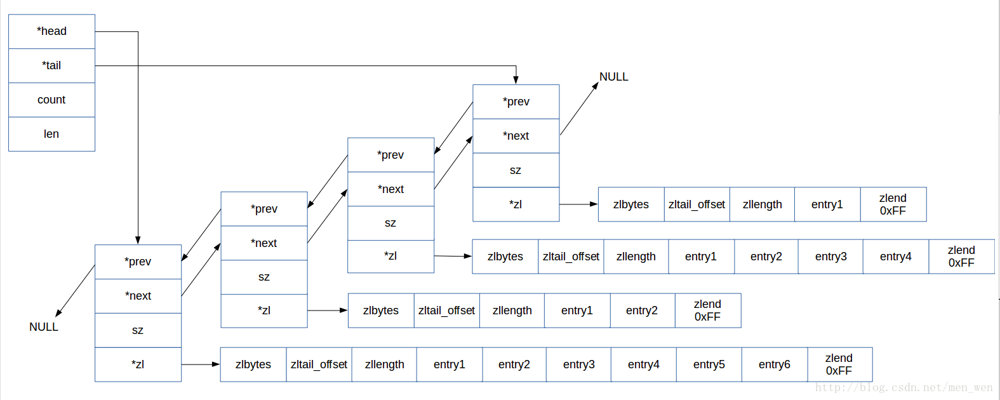
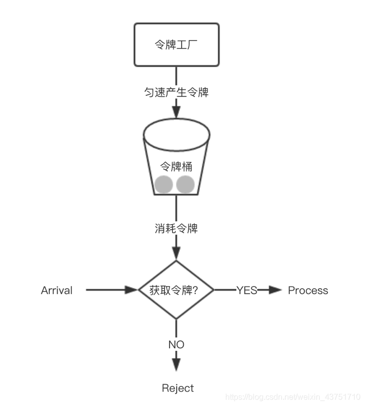

Redis_note
6.0.9 版本源码
数据结构
SDS
定义结构：
struct __attribute__ ((__packed__)) sdshdr64 {
uint64_t len; /* used 已使用的字节长度 */
uint64_t alloc; /* excluding the header and null terminator *///不包括头部和'\0'截止符
unsigned char flags; /* 3 lsb of type, 5 unused bits */ //只有前3位被使用，用作标志SDS_TYPE_64 或 32 或 16 等等
char buf[];
};
//部分语言技巧
typedef char *sds;
#define SDS_HDR(T,s) ((struct sdshdr##T *)((s)-(sizeof(struct sdshdr##T)))) // 将char*转换为 sdshdr 结构，函数传参使用 char*,在函数内部通过这个宏转换为 sdshdr
// T 为8，16，32，64的选择
unsigned char flags = s[-1]; // 可以取出 flag
字符串扩展内存不够时，分配策略：
修改长度后，如果长度 len 小于 1M，将分配相同 len 的未使用空间，否则分配1M的未使用空间
#define SDS_MAX_PREALLOC (1024*1024)
newlen = (len+addlen);
if (newlen < SDS_MAX_PREALLOC)
newlen *= 2;
else
newlen += SDS_MAX_PREALLOC;
缩短字符串后不会释放空间。
链表
结构定义：
typedef struct listNode {
struct listNode *prev;
struct listNode *next;
void *value;
} listNode;
typedef struct listIter { // 迭代器
listNode *next; // 当前迭代到的节点
int direction; // 迭代方向
} listIter;
typedef struct list {
listNode *head;
listNode *tail;
void *(*dup)(void *ptr); // 节点值复制函数
void (*free)(void *ptr); // 节点值释放函数
int (*match)(void *ptr, void *key); // 节点值对比函数
unsigned long len; // 节点数量
} list;
字典
哈希表结构定义：
/* This is our hash table structure. Every dictionary has two of this as we
* implement incremental rehashing, for the old to the new table. */
typedef struct dictht {
dictEntry **table; // 哈希表数组
unsigned long size; // 哈希表大小
unsigned long sizemask; // 哈希表掩码，用于计算索引值，为 size - 1
unsigned long used; // 该哈希表已有节点的数量
} dictht;
每个字典都使用两个哈希表，从而实现渐进式 rehash
哈希表节点
typedef struct dictEntry { // 哈希表节点
void *key; // 键
union { // 值
void *val;
uint64_t u64;
int64_t s64;
double d;
} v;
struct dictEntry *next; // 指向下一个哈希表节点，形成链表
} dictEntry;
字典结构定义：
typedef struct dict {
dictType *type; // 类型特定函数
void *privdata; // 私有数据
dictht ht[2]; // 哈希表
long rehashidx; /* rehash索引，rehash不在进行时为-1 */
unsigned long iterators; /* 目前正在运行的安全迭代器的数量 */
} dict;
typedef struct dictType { // 字典类型特定函数
uint64_t (*hashFunction)(const void *key); // 计算哈希值的函数
void *(*keyDup)(void *privdata, const void *key); // 复制键的函数
void *(*valDup)(void *privdata, const void *obj); // 复制值的函数
int (*keyCompare)(void *privdata, const void *key1, const void *key2); // 对比键的函数
void (*keyDestructor)(void *privdata, void *key); // 销毁键的函数
void (*valDestructor)(void *privdata, void *obj); // 销毁值的函数
} dictType;
ht[1]哈希表只会在ht[0]哈希表进行 rehash 时使用
迭代器结构：
/* If safe is set to 1 this is a safe iterator, that means, you can call
* dictAdd, dictFind, and other functions against the dictionary even while
* iterating. Otherwise it is a non safe iterator, and only dictNext()
* should be called while iterating. */
typedef struct dictIterator {
dict *d;
long index;
int table, safe;
dictEntry *entry, *nextEntry;
/* unsafe iterator fingerprint for misuse detection. */
long long fingerprint;
} dictIterator;
语言技巧
#define dictSetVal(d, entry, _val_) do { \
if ((d)->type->valDup) \
(entry)->v.val = (d)->type->valDup((d)->privdata, _val_); \
else \
(entry)->v.val = (_val_); \
} while(0)
// 使用 do{}while(0) 避免宏替换后代码被展开
哈希算法
hash = dictHashKey(d,key);
idx = hash & d->ht[table].sizemask; // 相当于 hash % size，将 hash 分布到 size 大小
rehash
- 为
ht[1]分配空间- 扩展：大小为第一个大于等于
ht[0].used * 2的 2 的 n 次幂 - 收缩：大小为第一个大于等于
ht[0].used的 2 的 n 次幂
- 扩展：大小为第一个大于等于
- 将
ht[0]包含的键值对 rehash 到ht[1]上（重新计算哈希值与索引值） - 释放
ht[0]，将ht[1]设置为ht[0]，并在ht[1]新建一个空的哈希表
渐进式rehash
将rehashidx设置为0，表示 rehash 开始
每次对字典执行操作时，程序会顺带将ht[0]在rehashidx上的键值对 rehash 到ht[1]，完成后+1
在 rehash 期间，每次对字典执行添加、删除、查找或者更新操作时，都会执行一次渐进式 rehash。采用渐进式 rehash 会导致字典中的数据分散在两个 dictht 上，因此对字典的查找操作也需要到对应的 dictht 去执行。例如查找某个键，程序会先在ht[0]中查找，如果找不到，就再去ht[1]中查找。
整数集合
当一个集合只包含整数值元素，且这个集合的元素数目不多时，就会使用整数集合作为集合键的底层实现
结构定义：
typedef struct intset {
uint32_t encoding; // 编码方式
uint32_t length; // 集合包含的元素数量
int8_t contents[]; // 保存元素的数组，真正类型取决于 encoding 的值
} intset;
升级：
如 当向一个底层为 int16_t 数组的整数集合添加一个 int64_t 类型的整数值时，整数集合已有的所有元素都会转型为 int64_t 。
- 重新分配空间
- 转换旧元素类型，放在正确位置上
- 添加新元素
不支持降级
压缩列表
储存结构：
<zlbytes> <zltail> <zllen> <entry> <entry> ... <entry> <zlend>
| 属性 | |||
|---|---|---|---|
| zlbytes | uint32_t | 记录整个压缩列表占用字节数 | |
| zltail | uint32_t | 记录压缩列表尾节点距离压缩列表起始地址有多少字节 | |
| zllen | uint16_t | 记录压缩列表包含的节点数量 When there are more than 2^16-2 entries, this value is set to 2^16-1 and we need to traverse the entire list to know how many items it holds. |
|
| entry | 节点 | ||
| zlend | 特殊值 0xFF 标记压缩列表的末端 |
entry:
<prevlen> <encoding> <entry-data>
prevlen:
记录压缩列表前一个节点长度
见书
连锁更新
由于在插入长节点，使prevlen增加长度，从而引发的连锁更新
删除节点也会引发连锁更新
QuickList

结构定义
typedef struct quicklist {
quicklistNode *head;
quicklistNode *tail;
//ziplist中的entry节点计数器
unsigned long count; /* total count of all entries in all ziplists */
//quicklist的quicklistNode节点计数器
unsigned long len; /* number of quicklistNodes */
// 保存ziplist的大小，配置文件设定，占16bits
int fill : QL_FILL_BITS; /* fill factor for individual nodes */
//保存压缩程度值，配置文件设定，占16bits，0表示不压缩
unsigned int compress : QL_COMP_BITS; /* depth of end nodes not to compress;0=off */
unsigned int bookmark_count: QL_BM_BITS;
quicklistBookmark bookmarks[];
} quicklist;
quicklist节点结构
typedef struct quicklistNode {
struct quicklistNode *prev;
struct quicklistNode *next;
//不设置压缩数据参数recompress时指向一个ziplist结构
//设置压缩数据参数recompress指向quicklistLZF结构
unsigned char *zl;
//压缩列表ziplist的总长度
unsigned int sz; /* ziplist size in bytes */
//ziplist中包的节点数，占16 bits长度
unsigned int count : 16; /* count of items in ziplist */
//表示是否采用了LZF压缩算法压缩quicklist节点，1表示压缩过，2表示没压缩，占2 bits长度
unsigned int encoding : 2; /* RAW==1 or LZF==2 */
//表示一个quicklistNode节点是否采用ziplist结构保存数据，2表示压缩了，1表示没压缩，默认是2，占2bits长度
unsigned int container : 2; /* NONE==1 or ZIPLIST==2 */
//标记quicklist节点的ziplist之前是否被解压缩过，占1bit长度
//如果recompress为1，则等待被再次压缩
unsigned int recompress : 1; /* was this node previous compressed? */
//测试时使用
unsigned int attempted_compress : 1; /* node can't compress; too small */
//额外扩展位，占10bits长度
unsigned int extra : 10; /* more bits to steal for future usage */
} quicklistNode;
压缩过的ziplist结构—quicklistLZF
typedef struct quicklistLZF {
//表示被LZF算法压缩后的ziplist的大小
unsigned int sz; /* LZF size in bytes*/
//保存压缩后的ziplist的数组，柔性数组
char compressed[];
} quicklistLZF;
管理ziplist信息的结构quicklistEntry
//管理quicklist中quicklistNode节点中ziplist信息的结构
typedef struct quicklistEntry {
const quicklist *quicklist; //指向所属的quicklist的指针
quicklistNode *node; //指向所属的quicklistNode节点的指针
unsigned char *zi; //指向当前ziplist结构的指针
unsigned char *value; //指向当前ziplist结构的字符串vlaue成员
long long longval; //指向当前ziplist结构的整数value成员
unsigned int sz; //保存当前ziplist结构的字节数大小
int offset; //保存相对ziplist的偏移量
} quicklistEntry;
迭代器
//quicklist的迭代器结构
typedef struct quicklistIter {
const quicklist *quicklist; //指向所属的quicklist的指针
quicklistNode *current; //指向当前迭代的quicklist节点的指针
unsigned char *zi; //指向当前quicklist节点中迭代的ziplist
long offset; //当前ziplist结构中的偏移量 /* offset in current ziplist */
int direction; //迭代方向
} quicklistIter;
压缩深度
quicklist 默认的压缩深度是 0，也就是不压缩。压缩的实际深度由配置参数list-compress-depth决定。
为了支持快速的 push/pop 操作，quicklist 的首尾两个 ziplist 不压缩，此时深度就是 1。
如果深度为 2，就表示 quicklist 的首尾第一个 ziplist 以及首尾第二个 ziplist 都不压缩。
插入
以选择在头部或者尾部进行插入( quicklistPushHead 和 quicklistPushTail )，而不管是在头部还是尾部插入数据，都包含两种情况：
- 如果头节点（或尾节点）上ziplist大小没有超过限制（即
_quicklistNodeAllowInsert返回1），那么新数据被直接插入到ziplist中（调用ziplistPush）。 - 如果头节点（或尾节点）上ziplist太大了，那么新创建一个quicklistNode节点（对应地也会新创建一个ziplist），然后把这个新创建的节点插入到 quicklist 双向链表中。
也可以从任意指定的位置插入。quicklistInsertAfter和quicklistInsertBefore就是分别在指定位置后面和前面插入数据项。这种在任意指定位置插入数据的操作，要比在头部和尾部的进行插入要复杂一些。
- 当插入位置所在的ziplist大小没有超过限制时，直接插入到ziplist中就好了；
- 当插入位置所在的ziplist大小超过了限制，但插入的位置位于ziplist两端，并且相邻的quicklist链表节点的ziplist大小没有超过限制，那么就转而插入到相邻的那个quicklist链表节点的ziplist中；
- 当插入位置所在的ziplist大小超过了限制，但插入的位置位于ziplist两端，并且相邻的quicklist链表节点的ziplist大小也超过限制，这时需要新创建一个quicklist链表节点插入。
- 对于插入位置所在的ziplist大小超过了限制的其它情况（主要对应于在ziplist中间插入数据的情况），则需要把当前ziplist分裂为两个节点，然后再其中一个节点上插入数据。
对象
结构定义
#define LRU_BITS 24
typedef struct redisObject {
unsigned type:4;
unsigned encoding:4;
unsigned lru:LRU_BITS; /* LRU time (relative to global lru_clock) or
* LFU data (least significant 8 bits frequency
* and most significant 16 bits access time). */
// 最后一次被命令访问时间
int refcount; // 引用计数
void *ptr; // 指向底层实现数据结构
} robj;
字符串对象
-
int
-
raw
-
embstr 只读 任何修改命令都将其转为raw
调用一次内存分配函数创建 redisObject 结构和 sdshdr 结构，只需一次内存分配次数和一次内存释放次数。
只读，任何修改命令将转换为raw
列表对象
redis3.2之后使用quicklist代替了ziplist和linkedlist
哈希对象
-
ziplist
同一键值对的两个节点紧挨在一起，键在前，值在后，不同键值对按添加顺序排列
-
hashtable
对象的每个键值对都是用一个字典键值对来保存，每个键和每个值都是一个字符串对象
集合对象
只存储不重复元素，无序方式，而列表对象可存储重复元素，先后顺序
-
intset
当集合中的元素都是整数且元素个数小于set-maxintset-entries配置（默认512个）时，Redis会选用intset来作为集合的内部实现，从而减少内存的使用。
-
hashtable
有序集合对象
相比于集合类型多了一个排序属性 score（分值）
-
ziplist
-
skiplist
同时使用跳跃表和字典实现，字典根据键找分值快，跳跃表根据分值找键快
数据库
服务区每个数据库都有redisDb结构表示，dict字典保存着数据库的所以键值对，每个键为字符串对象，值为任意Redis对象
过期键删除策略
-
定时删除：
在设置键的过期时间的同时，创建一个定时器（timer）,让定时器在键的过期时间来临时，立即对执行对键的删除操作。 定时删除策略对内存较为友好，但是对CPU不友好。
-
惰性删除：
放任键过期不管，每次从键空间中取得键时，都检查取得的键是否过期，如果过期就删除该键，没有过期就返回该键。
对CPU较为友好，对内存较为不友好。如果数据库中有很多的过期键，但是却永远不会被访问到，那么这可以看做是一种内存泄露。比如日志文件
-
定期删除：
每隔一段时间对数据库进行一次检查，删除过期键。折中
==Redis 采用惰性删除 + 定期删除==。采用定期删除和惰性删除，仍然会有部分过期键没有被清除，所以需要用到内存淘汰机制。
内存淘汰机制
-
volatile-LRU
从已设置过期时间的数据集中挑选最近最少使用的数据淘汰
-
LFU
-
volatile-random
从已设置过期时间的数据集中任意选择数据淘汰
-
volatile-TTL
从已设置过期时间的数据集中挑选将要过期的数据淘汰
-
allkeys-LRU
从数据集中挑选最近最少使用的数据淘汰
-
no-enviction
禁止驱逐数据
RDB
记录的是某一时刻的数据，而不是操作
子线程写入 + 启动时自动载入
- 将某个时间点的所有数据都存放到硬盘上。
- 可以将快照复制到其它服务器从而创建具有相同数据的服务器副本。
- 如果系统发生故障，将会丢失最后一次创建快照之后的数据。
- 如果数据量很大，保存快照的时间会很长。
SAVE 命令与 BGSAVE 命令用于生成 RDB 文件
保存时，过期键不会保存入新创建的RDB文件中
- 主服务器模式：启动载入时过期键会被忽略
- 从服务器模式：所有键都会载入，从服务器数据会被清空
服务器启动时自动载入RDB文件。服务器优先使用AOF文件还原数据库状态，AOF关闭时才使用RDB
服务器载入RDB文件期间处于阻塞状态
AOF
过期键被删除时AOF文件追加一条DEL命令
过期键不会保存到重写的AOF文件中
复制模式下，主服务器删除一个过期键，则同时通知从服务器删除，向从服务器发送DEL命令。
访问主服务器的过期键，会被删除，访问从服务器的过期键，能够访问
服务器appendfsync的值直接决定AOF持久化功能的效率和安全性
- Always：同步写回，每个写命令执行完立马同步将日志写回磁盘，最慢
- Everysec：每秒写回，只是先把日志写到 AOF 文件的内存缓冲区，每隔一秒把缓冲区中的内容写入磁盘；
- No：操作系统控制的写回：每个写命令执行完，只是先把日志写到 AOF 文件的内存缓冲区，由操作系统决定何时将缓冲区内容写回磁盘。性能最好，但是丢失数据多
AOF重写
原理：首先从数据库读取现有键值，用一条命令记录键值，代替之前的多条冗余命令
使用==子进程==而非线程，这样重写期间，服务器进程（父进程）可以继续处理命令
完成后向父进程发送信号，将AOF重写缓冲区的内容写入新AOF缓冲区并替换
事件
文件事件
服务器通过套接字与客户端或者其它服务器进行通信，文件事件就是对套接字操作的抽象。
Redis 基于 Reactor 模式开发了自己的网络事件处理器，使用 I/O 多路复用程序来同时监听多个套接字，并将到达的事件传送给文件事件分派器，分派器会根据套接字产生的事件类型调用相应的事件处理器。

时间事件
所有时间事件都放在一个无序列表中
- 定时事件
- 周期事件

对时间事件与文件事件的处理都是同步、有序、原子地执行，事件间不会抢占
集群
CLUSTER MEET <ip> <port> 让 node 节点与 ip 和 port 指定的节点进行握手，握手成功时将指定的节点添加进当前所在集群
CLUSTER ADDSLOTS <slot> [slot ...]将一个或多个槽给节点负责
当客户端向节点发送与数据库键有关的命令时，节点会计算键属于哪个槽，检查这个槽是否指派给自己，否则返回MOVED错误，指引客户端至正确节点，并重复步骤。
CLUSTER KEYSLOT <key> 查看给定键属于哪个槽
重新分片操作可以在线进行，并可继续处理命令请求
主从复制
作用：
- 数据冗余：实现了数据的热备份，是持久化之外的一种数据冗余方式。
- 数据恢复：当主节点出现问题，由从节点提供服务，实现快速的故障恢复。（服务的冗余）
- 负载均衡：主从复制的基础上，配合读写分离，有主节点提供写服务，从节点提供读服务。尤其写少读多的场景
- 高可用：是哨兵和集群能够实施的基础
流程：
- 设置主节点的地址和端口
- 建立套接字连接
- 发送PING命令
- 权限验证
- 同步
- 命令传播
同步
从节点向主节点发送psync命令（Redis2.8以前是sync命令），开始同步
全量复制
用于初次复制或其他无法进行部分复制的情况，将主节点中的所有数据都发送给从节点，是一个非常重型的操作。
- 从节点或主节点判断无法进行部分复制
- 主节点 fork 子进程执行 BGSave，在后台生成 RDB 文件，并使用一个缓冲区（复制缓冲区）记录从现在开始执行的写命令
- 主节点将 RDB 文件发送给从节点。从节点清除自己的旧数据，载入接收的 RDB 文件，将数据库状态更新至对应状态
- 主节点将复制缓冲区中的所有写命令发送给从节点，从节点执行写命令，更新状态
- 如果从节点开启了 AOF，会触发 bgRewriteAof，保证 AOF 文件更新至主节点的最新状态
重型操作，消耗 CPU、内存、硬盘 IO，消耗主从节点的带宽；从节点载入新 RDB 文件的过程是阻塞的，无法响应客户端命令
部分复制
用于网络中断等情况后的复制，只将中断期间主节点执行的写命令发送给从节点
-
复制偏移量：主从节点分别维护一个复制偏移量 offset：主节点每次向从节点同步了 n 字节数据后，将修改自己的复制偏移量 offset+N；从节点同步后也会修改。如果二者 offset 不同，则根据两个 offset 找到从节点缺少的数据
-
复制积压缓冲区：主节点内部维护一个固定长度的、先进先出(FIFO)队列 作为复制积压缓冲区，命令传播时，不仅会将写命令同步到从节点，还会将写命令写入复制积压缓冲区。
- 由于复制积压缓冲区定长且是先进先出，所以它保存的是主节点最近执行的写命令；时间较早的写命令会被挤出缓冲区。因此，当主从节点offset的差距过大超过缓冲区长度时，将无法执行部分复制，只能执行全量复制。
- 从节点将 offset 发送给主节点后，主节点根据 offset 和缓冲区大小决定能否执行部分复制：
-
服务器运行ID (runid)：每个 Redis 节点，都有其运行 ID，运行 ID 由节点在启动时自动生成，主节点会将自己的运行 ID 发送给从节点，从节点会将主节点的运行 ID 存起来。 从节点 Redis 断开重连的时候，就是根据运行 ID 来判断同步的进度：
- 如果从节点保存的 runid 与主节点现在的 runid 相同，说明主从节点之前同步过，主节点会继续尝试使用部分复制
- 不同，说明从节点在断线前同步的 Redis 节点并不是当前的主节点，只能进行全量复制。
命令传播
主节点将自己执行的写命令发送给从节点，从节点接收命令并执行，从而保证主从节点数据的一致性。
repl-disable-tcp-nodelay
- yes：合并小的 tcp 包从而节省带宽，但是增加同步延迟
- no：master 会立即发送同步数据
一般系统对数据不一致容忍度较高，且主从节点网络状态不好时采用 yes
心跳检测机制会定时向主服务发送消息，保证主从服务器一直处于连接状态
哨兵
作用
- 监控（Monitoring）：持续监控 Redis 主节点、从节点是否处于预期的工作状态。
- 通知（Notification）：哨兵可以把 Redis 实例的运行故障信息通过 API 通知监控系统或者其他应用程序。
- 自动故障恢复（Automatic failover）：当主节点运行故障时，哨兵会启动自动故障恢复流程：某个从节点会升级为主节点，其他从节点会使用新的主节点进行主从复制，通知客户端使用新的主节点进行。
- 配置中心（Configuration provider）：哨兵可以作为客户端服务发现的授权源，客户端连接到哨兵请求给定服务的 Redis 主节点地址。如果发生故障转移，哨兵会通知新的地址。这里要注意：哨兵并不是 Redis 代理，只是为客户端提供了 Redis 主从节点的地址信息。
哨兵模式是天然的分布式系统，主节点的系统故障是在多个实例共同认可的情况下完成的；即使不是所有的哨兵实例都正常运行哨兵集群也能正常工作
节点发现
哨兵节点每隔 10s（故障转移时每隔 1s）向主从节点发送 INFO 命令，以此获取主从节点的信息。第一次哨兵仅知道 主节点 信息，通过对主节点执行 INFO 可以获取其从节点列表
INFO命令目标是从节点：哨兵从返回信息中获取从节点所属最新主节点 ip 和 port，如果与历史记录不一致，则执行更新；获取从节点的优先级、复制偏移量以及与主节点的链接状态并更新INFO命令目标是主节点：获取从机列表，新增则将其加入监控列表- 记录节点的 runID
- 节点的角色发生变化，哨兵会记录节点新的角色以及上报时间。
哨兵们通过发布订阅机制，通过一个约定好的通道（channel）发布、订阅 hello 信息进行通信
故障检测
通过 PING 命令实现对主从节点的故障检测。
主管宕机
一个哨兵实例通过检测发现某个主节点发生故障的一种状态
客观宕机
哨兵检测到某个主节点发生故障，通过命令 SENTINEL is-master-down-by-addr 与其他哨兵协商，在指定时间内收到指定数量的其他哨兵的确认反馈时的一种状态
故障迁移
过滤网络状态不好的节点，依次考察 优先级、复制进度、id 号
- 优先级：slave-priority 配置项，可以给从节点设置优先级。每一台从节点的服务器配置不一定是相同的，我们可以根据服务器性能配置来设置从节点的优先级。
- 复制进度，选取复制进度靠前的
- id 号，ID 号小的节点胜出
Sentinel Leader选举
选取 哨兵 leader 节点进行主从故障转移
raft
集群
redis cluster 是一种服务器 sharding 技术，3.0 开始提供
对于哨兵模式，已经实现高可用，读写分离，但是每台 redis 服务器都存储相同的数据，浪费内存
引入哈希槽（hash slot），通过 CRC16 校验后对哈希槽个数取模来决定放置在哪个槽
与哨兵模式区别
- 哨兵模式监控权交给了哨兵系统，集群模式中是工作节点自己做监控
- 哨兵模式发起选举是选举一个leader哨兵节点来处理故障转移，集群模式是在从节点中选举一个新的主节点，来处理故障的转移
缓存穿透、击穿、雪崩
缓存穿透
缓存和数据库中都没有的数据，用户不断发起请求，导致这个不存在的数据每次请求都要到存储层查询，失去了缓存的意义
解决方案：
- 接口层增加校验，如用户鉴权校验、ID 做基础校验、id <= 0 的直接拦截
- 用缓存取不到的数据，在数据库中也没有渠道，这是可以将 key-value 写为 key-null，缓存有效时间可以设置短一些，防止攻击用户反复用同一 id 暴力攻击
- 布隆过滤器，使用布隆过滤器存储所有可能访问的 key，不存在的 key 直接被过滤，存在的 key 则再进一步查询缓存和数据库
缓存击穿
缓存中没有单数据库中有的数据（一般指缓存时间到期），由于并发用户较多，同时读缓存没有读到数据，又到数据库去取数据，引起数据库压力瞬间增大
解决方案：
- 设施热点数据永远不过期
- 接口限流与熔断，降级。重要的接口做好限流策略，防止用户恶意刷接口，同时要降级准备，当接口中某些服务不可用的时候，进行熔断，失败快速返回机制
- 加互斥锁。
缓存雪崩
大量热点 key 设置了相同的过期时间，导致在缓存的同一时刻全部失效，造成瞬时数据库的请求量大，压力骤增，引起雪崩，甚至导致数据库被打挂
解决方案
- 过期时间打散。给缓存的过期时间加上一个随机值时间，使得每个 key 的过期时间分不开来，不集中在同一时刻失效
- 热点数据不过期
- 加互斥锁。按 key 维度加锁，对同一个 key，只允许一个线程去计算，其他线程原地阻塞等待第一个线程的计算结果，然后直接走缓存。
接口限流、服务降级、熔断
接口限流
限流原因：
- 用户增长过快
- 热点事件（微博热搜）
- 爬虫
- 恶意刷单
- 对内的 RPC 服务来说，一个接口可能被多个服务调用，一个服务突发流量把接口挂掉，导致其他服务也停止
单机限流算法
- 计数器算法
- 令牌桶
- 漏桶
计数器
限制一秒钟能通过的请求数，每来一个请求将计数加一，达到阈值则后续请求全部拒绝
弊端：突刺现象，可能前 10ms 通过阈值的请求，后面 990ms 只能把所有请求拒绝
漏桶
**原理：**算法内部有一个容器，类似漏斗，当请求进来时，相当于水倒入漏斗，然后从下端小口慢慢匀速的流出。不管上面流量多大，下面流出的速度始终保持不变。如果容器满了，那么新进来的请求就丢弃。
**实现：**准备一个队列保存请求，通过一个线程池定期从队列中获取请求并执行，可以一次性获取多个并发执行
弊端：无法应对短时间突发流量。
令牌桶
**原理：**存在一个桶，用来存放固定数量的令牌。算法中存在一种机制，以一定的速率往桶中放令牌，如果桶中令牌数达到上限，就丢弃令牌。每次请求调用需要先获取令牌，只有拿到令牌，才有机会继续执行，否则选择选择等待可用的令牌、或者直接拒绝。
漏桶算法 能够强行限制数据的传输速率，而“令牌桶算法”在能够限制数据的平均传输速率外，还允许某种程度的突发传输。在“令牌桶算法”中，只要令牌桶中存在令牌，那么就允许突发地传输数据直到达到用户配置的门限，所以它适合于具有突发特性的流量。
服务降级
系统将某些服务或者接口的功能降低
- 双十一，订单暂不允许修改收货地址
- 论坛只能看帖子不能发帖子
- App 日志上传接口，停掉一段时间，不能上传日志
熔断
目的是应对依赖的外部系统故障的情况
- A 服务的 X 功能依赖 B 服务的某个接口，当 B 服务的接口相应很慢时，A 服务的 X 功能相应被拖慢，导致 A 服务的线程被卡在 X 功能处理上
- 加入熔断机制，A 服务不再请求 B 服务的这个接口，A 服务内部只要发现是请求 B 服务的这个接口就立即返回错误，避免 A 服务整个被拖慢
实现
- 统一的 API 调用层，由 API 调用层来进行采样或统计，如果接口调用散落在代码各处则无法进行统一处理
- 阈值设计，如1 分钟内 30% 请求响应时间超过 1s 接熔断